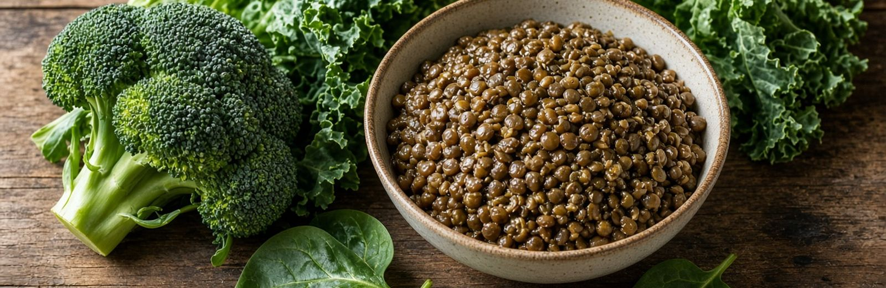

Breast Cancer Beyond Genetics · Part Two
How Cancer Actually Starts
Two things have to go wrong, and they feed each other. Something has to damage DNA. And something has to fail to remove the damaged cell.
Your body handles both thousands of times a day without you noticing. Breast cancer happens when the damage keeps arriving and the removal keeps failing, over years.
You Are Making Abnormal Cells Right Now
Your cells divide constantly. Every division copies three billion letters of DNA, and the copying is not perfect. Add ultraviolet light, chemical exposure, inflammation, and ordinary metabolism, and the damage is continuous.
Researchers who examine healthy tissue — skin, breast, esophagus — routinely find cells carrying cancer-associated mutations. Not in patients. In everyone.
This is normal. A mutated cell is not a tumor.
What Stops Them
Your body runs several overlapping defenses, all day, without your involvement.
For a mutated cell to become dangerous it has to defeat all of this: grow without permission, ignore the self-destruct signal, hide from immune cells, invade nearby tissue, and recruit its own blood supply. Most abnormal cells never get past the first item.
The second defense on that list is the one worth understanding in detail, because it is the one that fails first.
Apoptosis, And Who Pulls The Trigger
Apoptosis is the name for a cell killing itself — a controlled dismantling rather than a messy death. The cell breaks itself into tidy packages that neighboring cells absorb. No inflammation, no debris left behind.
Here is what almost no one is told: the trigger for apoptosis lives inside your mitochondria.
Mitochondria are the structures inside every cell that turn food into usable energy. That is the job everyone knows. But when a cell needs to be eliminated, it is the mitochondria that release the signal starting apoptosis. They hold the kill switch.
Which means a cell with damaged mitochondria has two problems at once. It produces energy badly. And it has trouble receiving the order to die.
Why Mitochondria Break First
Mitochondria carry their own small set of DNA, separate from the DNA in the cell’s nucleus. It sits at a permanent disadvantage.
Nuclear DNA is wrapped in protective proteins and copied by a system with careful error-checking. Mitochondrial DNA has none of that packaging, sits directly beside where energy production throws off reactive byproducts, and is copied by an enzyme with weaker proofreading.
Unprotected. Next to the exhaust. Copied carelessly.
There is a finding here specific to breast tissue that deserves to be better known. The enzyme that copies mitochondrial DNA is called POLG. When researchers sequenced it in breast tumors, POLG was mutated in 63% of them — the copying machine itself, broken, in nearly two out of three.
Once that starts, it compounds. Damaged mitochondria produce more reactive byproducts. Those byproducts damage more DNA, both the mitochondria’s own and the cell’s nucleus. Which produces more damaged mitochondria.
Sugar Damages Mitochondria Directly
This is the mechanism underneath everything this guide says about insulin, and it is more concrete than most people realize.
Mitochondria make energy by passing electrons down a chain of proteins — like water down a series of mill wheels. The system is built for steady flow.
When blood sugar runs high, too many electrons enter that chain at once. The line backs up. Electrons that should have continued down the chain leak out early and land on oxygen, producing superoxide — a reactive molecule that damages whatever it touches. What it touches first is the mitochondrion’s own unprotected DNA.
This is not a fringe claim. Researchers studying diabetes concluded that hyperglycemia-driven overproduction of superoxide is the causal link between high blood sugar and tissue damage — the single upstream event feeding four separate damage pathways.
Go deeper: the second route, glycation
There is a second route. Excess sugar molecules stick to proteins in a process called glycation, producing advanced glycation end-products, or AGEs. These accumulate in tissue over years and independently impair mitochondrial function.
And Insulin Presses The Accelerator
Most women have only ever heard of insulin in the context of diabetes. It is more than a blood sugar hormone. It is a growth signal.
When insulin stays chronically elevated, it tells cells to take up nutrients and divide. It raises IGF-1, a closely related signal that tells cells to grow and not to die.
It also makes more of your own estrogen biologically active. Most estrogen in your blood is bound to a carrier protein and inactive — only the free fraction can enter a cell. High insulin lowers that carrier protein, so more estrogen becomes active without your ovaries producing a single extra molecule.
Put the two halves together. A body running on constant blood sugar spikes is damaging the machinery that removes bad cells while simultaneously telling those cells to multiply.
That is why sugar keeps appearing in this guide. Not because tumors eat it. Because it breaks your cleanup crew and presses the accelerator at the same time.

The Estrogen Problem Is Really Two Problems
Estrogen is essential. It is not the enemy.
But it has to be broken down and removed, and two separate things can go wrong: how much you have, and which route your body uses to get rid of it. The second is where breast tissue is unusual, and where women get almost no information at all.
Three exits
Why this matters more in the breast than anywhere else
The enzyme that pushes estrogen down the damaging fourth-position route is CYP1B1 — and it works almost exclusively at that position. Its activity is high in breast tissue.
Your liver mostly uses the safe exit. Your breast tissue does not.
The second step: neutralizing what comes out
Even the dangerous byproducts can be made harmless. Your body attaches a small chemical tag to them — a process called methylation, run by an enzyme called COMT. Once tagged, they become stable and easy to excrete.
So the highest-risk pattern is a combination: sending a lot of estrogen down the damaging route, and methylating poorly. Either alone is manageable. Together, damage accumulates.
Methylation runs on B vitamins, folate, magnesium, and adequate protein. It is impaired by alcohol — one more reason alcohol is the clearest dietary risk factor in this book.
Progesterone: The Other Half Of The Ratio
Estrogen tells breast tissue to proliferate. Progesterone moderates that signal. What matters is the relationship between them, not either number alone.
During perimenopause, ovulation becomes irregular — and progesterone is only produced after ovulation. So a woman can have falling estrogen and still be functionally estrogen-dominant, because progesterone fell faster.
This is why women are told their labs look normal while feeling anything but. Each number sits inside range. The relationship between them does not.
The Conditions That Favor Cancer
Everything above converges into a short list. These are the conditions in which a damaged cell is most likely to survive and keep going.
- Chronically elevated insulin
A direct growth signal - Elevated IGF-1
Insulin’s close relative, telling cells to grow and not to die - Chronic inflammation
A constant repair signal — and repair means division - Excess estrogen signaling
Roughly three-quarters of breast cancers carry estrogen receptors - Estrogen down the wrong exit
The 4-OH route, poorly methylated, damages DNA directly - Mitochondrial dysfunction
Damaged power plants, which also disables the self-destruct signal - Poor metabolic flexibility
The inability to switch between burning sugar and burning fat - Excess body fat
Particularly after menopause, producing both estrogen and inflammation - Inactivity
Raises insulin, dampens immune surveillance, and costs you muscle
Nearly every item traces back to the same handful of things: what you eat, how much you move, how much muscle you carry, how you sleep, what you absorb, and how often your body gets a break from digesting.
The Sugar Question, And A Genuine Scientific Argument
You may have heard that sugar feeds cancer. The real picture is more interesting.
Many tumors burn glucose heavily even when oxygen is available — an unusual pattern called the Warburg effect, named for Otto Warburg, who won a Nobel Prize for related work in 1931.
Go deeper: genetic first, or metabolic first?
What that observation means is genuinely contested. Mainstream oncology treats cancer as a genetic disease, with metabolic changes following from mutations. A serious minority of researchers argue the reverse — that mitochondrial damage comes first and the mutations follow. Nuclear transfer experiments, in which a tumor-cell nucleus placed into a cell with healthy mitochondria can behave normally, are difficult to square with the genetic-first view.
This matters to you because the answer determines what gets funded. If cancer is fundamentally genetic, you develop drugs. If it is fundamentally metabolic, you also study fuel, fasting, and mitochondrial function. Guess which one has money behind it.
One practical clarification. Lowering carbohydrates does not eliminate glucose — your liver manufactures it regardless, which is why ketosis is survivable. What lowering carbohydrates does change is insulin and IGF-1, and those are growth signals. That is a stronger and better-supported argument than starving a tumor.
Metabolic Flexibility
Metabolic flexibility is your body’s ability to switch cleanly between two fuels — glucose when you have eaten, stored fat when you have not. A metabolically flexible body handles a long gap between meals without shakiness, irritability, or urgency.
Eating every two or three hours from waking until bedtime means that switch is never used. Insulin never fully comes down, fat is never readily accessed, and hunger begins to feel like an emergency.
The machinery for burning fat does not disappear. It downregulates from disuse. Which means it comes back.
What This Actually Means
Every one of those responds to something you control.
You cannot make your body stop producing estrogen, and you cannot avoid every carcinogen in a world that put them in your kitchen without asking you. But you decide how much sugar floods your mitochondria, how well you methylate, which exit your estrogen takes, and how much of the burden your cells are carrying.
That is not a small amount of power. The rest of this book is how to use it.